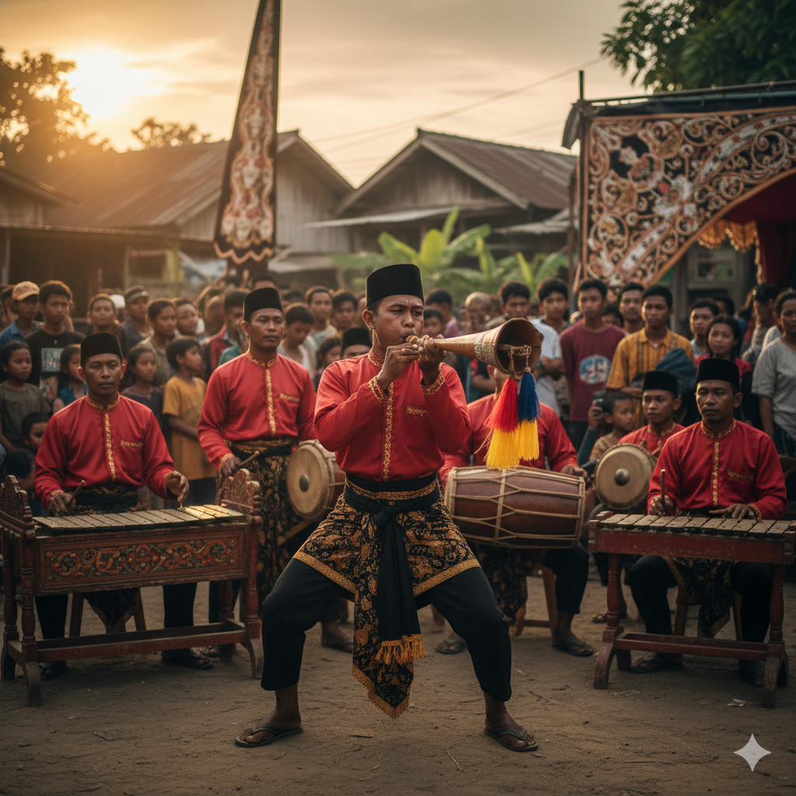

🏝️Selamat Datang di Pulau Garam
Madura adalah sebuah pulau yang terletak di sebelah timur laut Pulau Jawa. Pulau ini memiliki luas wilayah sekitar 5.379,23 km², yang mencakup empat kabupaten: Bangkalan, Sampang, Pamekasan, dan Sumenep. Berdasarkan data dari Badan Pusat Statistik (BPS) Provinsi Jawa Timur, jumlah penduduk Madura pada tahun 2023 diperkirakan mencapai 4 juta jiwa. Pulau Madura dikenal sebagai penghasil utama minyak bumi dan gas alam di Provinsi Jawa Timur. Selain itu, Madura juga merupakan produsen garam terbesar di Indonesia, sehingga dijuluki sebagai "Pulau Garam".
Sorotan Utama
Budaya Madura memiliki ciri khas yang sangat kuat dan unik. Berikut adalah beberapa elemen yang wajib Anda kenali:
- Karapan Sapi: Lomba pacu sapi ikonik.
- Batik Madura: Dikenal dengan warna-warna cerah dan motif khas.
- Soto Madura: Kuliner legendaris yang mendunia.
- Saronen: Musik tradisional pengiring upacara dan Karapan Sapi.
